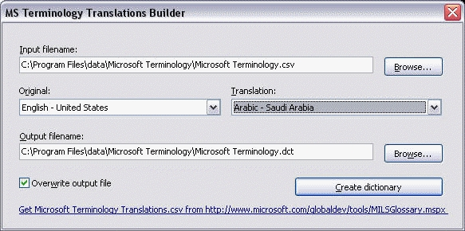

MS Terminology Translations Builder
The MS Terminology Translations Builder application is a utility program to convert the
Microsoft's Terminology Translations CSV file to IniTranslator dictionaries. You can get more
information and download the csv file from http://www.microsoft.com/globaldev/tools/MILSGlossary.mspx.
The application looks like this:

-
Input filename
-
The CSV file to read from. Type in a path and filename or click the Browse
button to select a file.
-
Original
-
If you selected a valid input file, this list is filled with all available languages in the
file. Select the language to use as the original string in the dictionary.
-
Translation
-
If you selected a valid input file, this list is filled with all available languages in the
file. Select the language to use as the translation string in the dictionary.
-
Output filename
-
Type in the path and filename of the dictionary file you want to save or click the
Browse button to select a file.
-
Overwrite output file
-
If the output file already exists, use this option to either append to or overwrite the
file.
Click the Create dictionary button to create the dictionary.